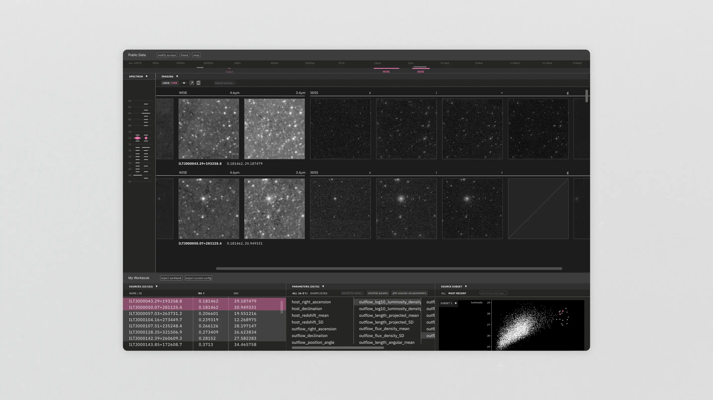
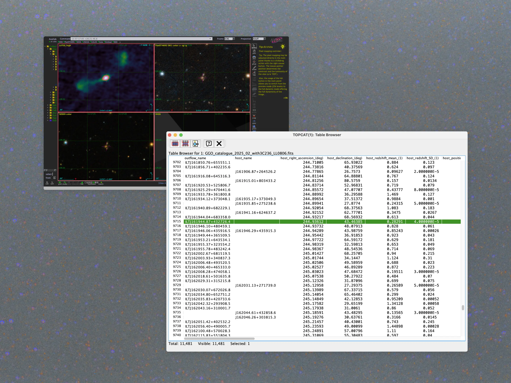
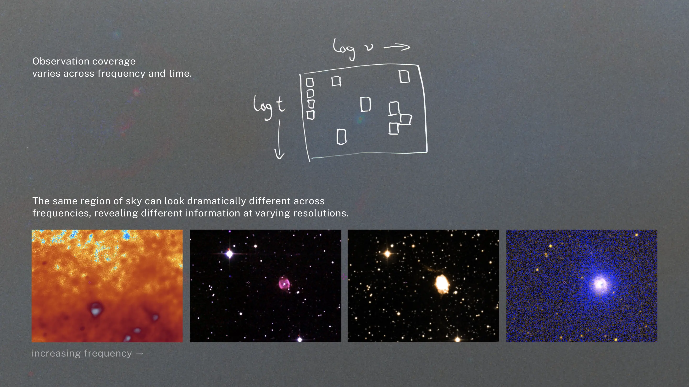
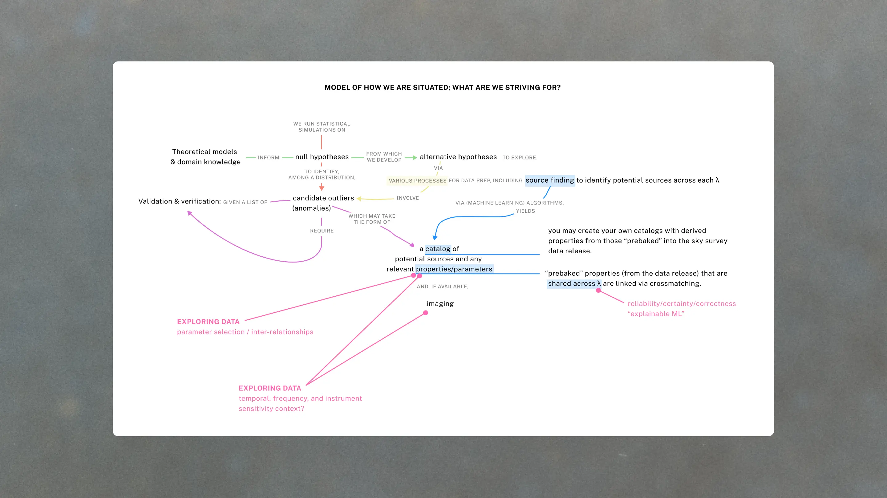
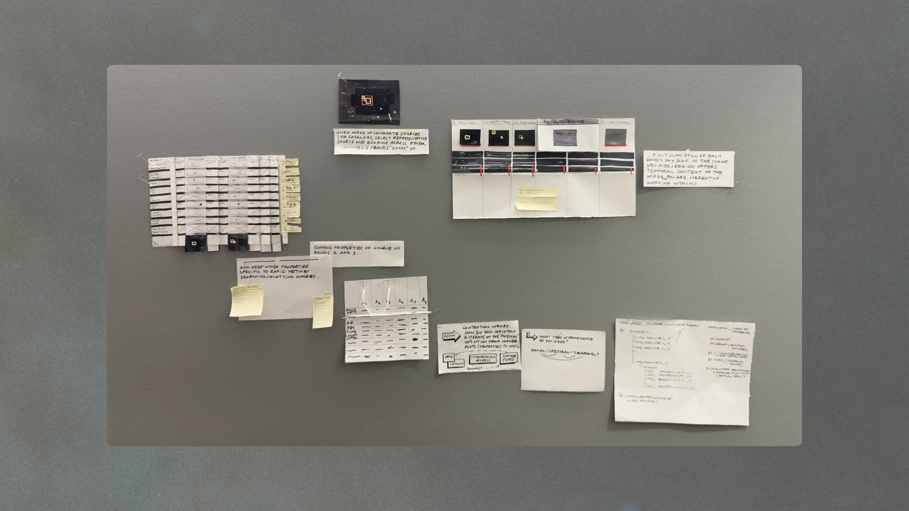
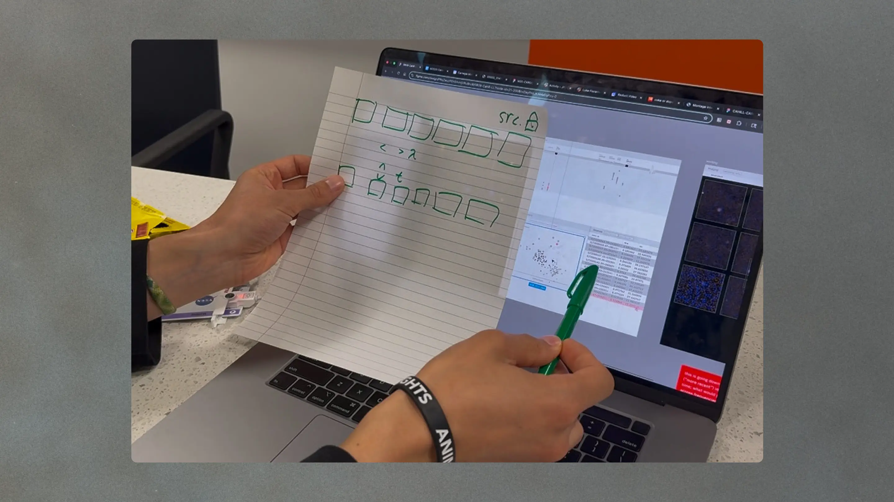
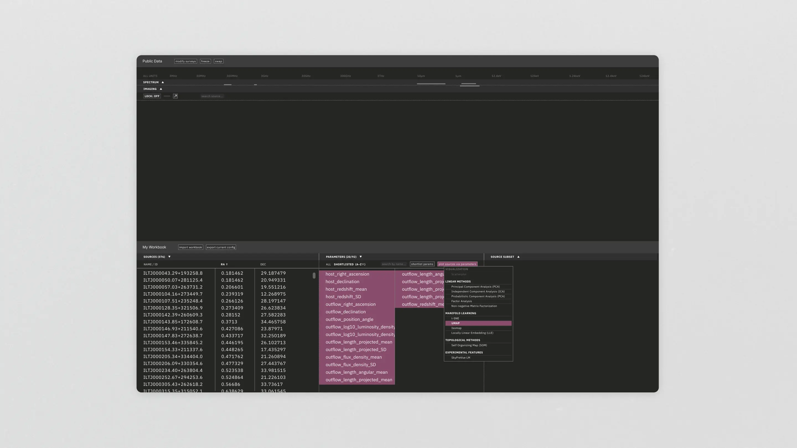
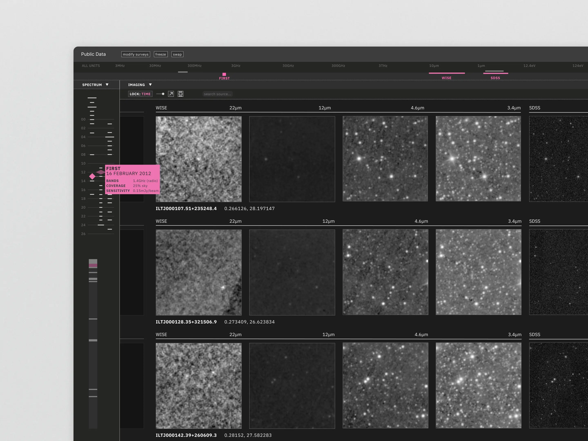

Digital Sky Surveys
A research prototype developed with Caltech astronomers, exploring how to navigate image and tabular data in a shared workspace.
Challenge
Astronomers and astrophysicists compare candidate objects using images from sky surveys and derived tabular measurements (referred to as “catalogs”). Today, image inspection and quantitative data analysis happen in separate tools, requiring researchers to copy and paste coordinates manually to retrieve imagery. This research prototype explored a shared workspace to close the gap.


Scope
Over ten weeks, I worked with three Caltech radio astronomers, each specializing in a different subdomain and bringing their own research practices. I spent the first seven weeks defining the problem and, during the final three, ran co-design sessions and iterative user testing to validate the prototype.
Discovery
Terms like exploratory research, hypothesis formation, and anomaly detection may sound straightforward, but understanding what they involved in practice for our scientists was challenging. Each scientist’s research problem was specific, and the available data varied widely, so there were no representative user flows to design for. I needed to correct my assumptions and clarify which needs were shared across researchers’ workflows. I used conversational diagrams and paper prototypes to frame the direction and align on interaction goals.


These artifacts led me to explore different visualizations and ask our partners whether any offered a meaningful opportunity. I considered plotting across bandpass filters and pairs of parameters, following conventions in the field. Conversations with scientists helped identify these as lower-priority approaches: though useful, existing tools already supported plotting, and additional visualizations would likely reveal little about the underlying data. Ultimately, the prototype focused on making data coverage explicit so that researchers could validate and verify data across images and their corresponding catalogs.

Influenced by the interaction affordances of Rubik’s cubes and video game navigation, I developed a “locking” interaction during co-design sessions with a researcher. By locking on different variables (e.g. timestamp of data release or specific frequency), scientists in different subdomains can move flexibly through the data.
System
The final prototype presents a sample workflow, from loading a researcher’s list of objects to inspecting relevant images.
1. Setup Rooted in Researcher Habits
Work starts with the researcher’s workbook at the bottom and reference public data at the top, pre-populated based on specific frequencies. The researcher inputs a shortlist of potentially relevant parameters to constrain their pool of candidate objects.

2. Data Coverage
Expanding the survey data map shows image availability and capture schedules across the years. Each data release includes finer details, such as instrument sensitivity. This surface allows for high-level context that is otherwise scattered across observatory websites.
Data coverage over time persists in the left sidebar, where users may swap out sky survey imagery and compare different surveys directly via updated imagery.

3. Locked Navigation
Each row of images corresponds to a potential cosmic object, allowing for direct comparison. With the interface locked on time, moving horizontally allows researchers to quickly compare the same object across frequencies. Noise and other image artifacts become immediately visible, which can help scientists choose which datasets to prioritize.
Impact
While this work remained a frontend prototype, it was validated by our Caltech stakeholders and later presented to their broader research group. This prompted further discussion about future directions, including opportunities for LLM integration to make researcher workflows and analysis more reproducible.